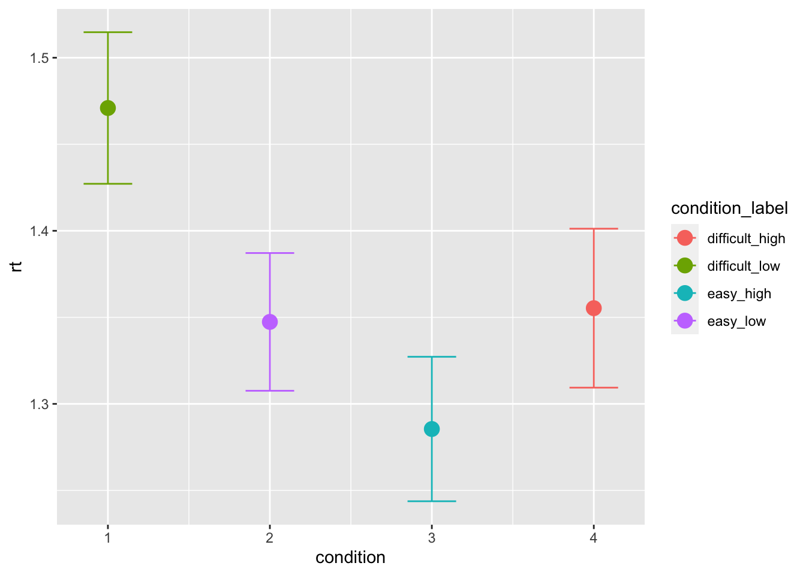
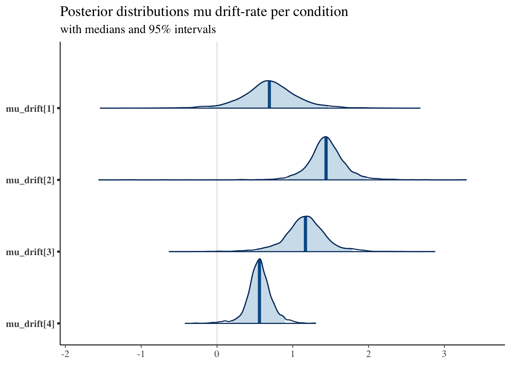
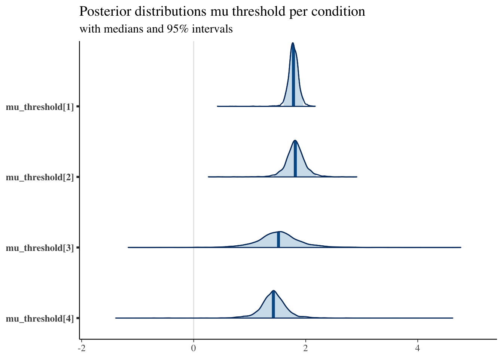
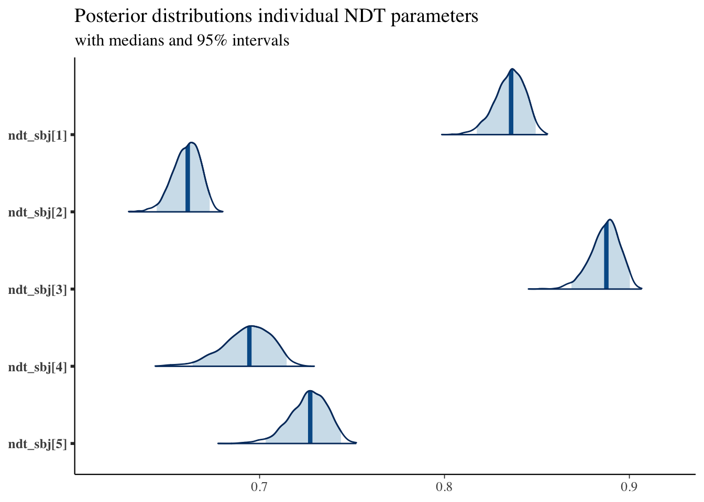

Fontanesi and colleagues 2019
rm(list = ls())
library(tidyverse)
library(dfoptim)
library(rtdists)
library(rstan)
library(bayesplot)First, we can load the data of our study from 2019:
data <- read.csv('data/fontanesi2019.csv')
data <- select(data, -X) # drop pandas index column
data <- data[data$participant < 6,] # select only 5 participants otherwise it takes too long
# add accuracy for stan data
data$accuracy_recoded <- data$accuracy
data[data$accuracy==0, "accuracy_recoded"] <- -1
# add conditions based on choice pairs
data[(data$inc_option == 1)&(data$cor_option == 2),"condition_label"] <- "difficult_low"
data[(data$inc_option == 1)&(data$cor_option == 3),"condition_label"] <- "easy_low"
data[(data$inc_option == 2)&(data$cor_option == 4),"condition_label"] <- "easy_high"
data[(data$inc_option == 3)&(data$cor_option == 4),"condition_label"] <- "difficult_high"
data[(data$inc_option == 1)&(data$cor_option == 2),"condition"] <- 1
data[(data$inc_option == 1)&(data$cor_option == 3),"condition"] <- 2
data[(data$inc_option == 2)&(data$cor_option == 4),"condition"] <- 3
data[(data$inc_option == 3)&(data$cor_option == 4),"condition"] <- 4The first model we can try to fit, is a diffusion model (DM) in which we vary drift-rate and threshold based on the condition (or choice pair). The DM assumptions are actually violated in this task: when we fit the DM without learning component, we assume that the trials are somewhat independent. While this is rarely the case even in non-learning tasks (e.g., because of post-error effects, practice effects) this is clearly not the case in learning tasks. However, this can give us a good idea of context-dependent effects on the RT distributions such as the ones we observed in the following plots:
ggplot(data = data, aes(x = condition, y = accuracy, color=condition_label))+
stat_summary(fun = "mean", geom="point", size=4) +
stat_summary(fun.data = mean_cl_normal, geom = "errorbar", size=.5, width=.3)
ggplot(data = data, aes(x = condition, y = rt, color=condition_label))+
stat_summary(fun = "mean", geom="point", size=4) +
stat_summary(fun.data = mean_cl_normal, geom = "errorbar", size=.5, width=.3)
Now we can prepare the data for stan. Note that this is a bit different for hierarchical models, and also when we want to fit separate parameters per condition:
unique(data$participant)## [1] 1 2 3 4 5sim_data_for_stan <- list(
N = dim(data)[1],
L = length(unique(data$participant)),
C = 4,
condition = data$condition,
participant = data$participant,
accuracy = data$accuracy_recoded,
rt = data$rt,
starting_point = 0.5
)fit1 <- stan(
file = "stan_models/hierDDM_cond.stan", # Stan program
data = sim_data_for_stan, # named list of data
chains = 2, # number of Markov chains
warmup = 1000, # number of warmup iterations per chain
iter = 3000, # total number of iterations per chain
cores = 2 # number of cores (could use one per chain)
)## Running /Library/Frameworks/R.framework/Resources/bin/R CMD SHLIB foo.c
## clang -mmacosx-version-min=10.13 -I"/Library/Frameworks/R.framework/Resources/include" -DNDEBUG -I"/Library/Frameworks/R.framework/Versions/4.0/Resources/library/Rcpp/include/" -I"/Library/Frameworks/R.framework/Versions/4.0/Resources/library/RcppEigen/include/" -I"/Library/Frameworks/R.framework/Versions/4.0/Resources/library/RcppEigen/include/unsupported" -I"/Library/Frameworks/R.framework/Versions/4.0/Resources/library/BH/include" -I"/Library/Frameworks/R.framework/Versions/4.0/Resources/library/StanHeaders/include/src/" -I"/Library/Frameworks/R.framework/Versions/4.0/Resources/library/StanHeaders/include/" -I"/Library/Frameworks/R.framework/Versions/4.0/Resources/library/RcppParallel/include/" -I"/Library/Frameworks/R.framework/Versions/4.0/Resources/library/rstan/include" -DEIGEN_NO_DEBUG -DBOOST_DISABLE_ASSERTS -DBOOST_PENDING_INTEGER_LOG2_HPP -DSTAN_THREADS -DBOOST_NO_AUTO_PTR -include '/Library/Frameworks/R.framework/Versions/4.0/Resources/library/StanHeaders/include/stan/math/prim/mat/fun/Eigen.hpp' -D_REENTRANT -DRCPP_PARALLEL_USE_TBB=1 -I/usr/local/include -fPIC -Wall -g -O2 -c foo.c -o foo.o
## In file included from <built-in>:1:
## In file included from /Library/Frameworks/R.framework/Versions/4.0/Resources/library/StanHeaders/include/stan/math/prim/mat/fun/Eigen.hpp:13:
## In file included from /Library/Frameworks/R.framework/Versions/4.0/Resources/library/RcppEigen/include/Eigen/Dense:1:
## In file included from /Library/Frameworks/R.framework/Versions/4.0/Resources/library/RcppEigen/include/Eigen/Core:88:
## /Library/Frameworks/R.framework/Versions/4.0/Resources/library/RcppEigen/include/Eigen/src/Core/util/Macros.h:613:1: error: unknown type name 'namespace'
## namespace Eigen {
## ^
## /Library/Frameworks/R.framework/Versions/4.0/Resources/library/RcppEigen/include/Eigen/src/Core/util/Macros.h:613:16: error: expected ';' after top level declarator
## namespace Eigen {
## ^
## ;
## In file included from <built-in>:1:
## In file included from /Library/Frameworks/R.framework/Versions/4.0/Resources/library/StanHeaders/include/stan/math/prim/mat/fun/Eigen.hpp:13:
## In file included from /Library/Frameworks/R.framework/Versions/4.0/Resources/library/RcppEigen/include/Eigen/Dense:1:
## /Library/Frameworks/R.framework/Versions/4.0/Resources/library/RcppEigen/include/Eigen/Core:96:10: fatal error: 'complex' file not found
## #include <complex>
## ^~~~~~~~~
## 3 errors generated.
## make: *** [foo.o] Error 1We can summarize the group parameters:
print(fit1, pars = c("mu_drift[1]", "mu_drift[2]", "mu_drift[3]", "mu_drift[4]",
"sd_drift[1]", "sd_drift[2]", "sd_drift[3]", "sd_drift[4]",
"mu_threshold[1]", "mu_threshold[2]", "mu_threshold[3]", "mu_threshold[4]",
"sd_threshold[1]", "sd_threshold[2]", "sd_threshold[3]", "sd_threshold[4]",
"mu_ndt", "sd_ndt"))## Inference for Stan model: hierDDM_cond.
## 2 chains, each with iter=3000; warmup=1000; thin=1;
## post-warmup draws per chain=2000, total post-warmup draws=4000.
##
## mean se_mean sd 2.5% 25% 50% 75% 97.5% n_eff Rhat
## mu_drift[1] 0.69 0.01 0.38 -0.11 0.49 0.69 0.90 1.47 1440 1.00
## mu_drift[2] 1.44 0.01 0.28 0.94 1.31 1.44 1.58 1.97 1338 1.00
## mu_drift[3] 1.16 0.01 0.30 0.53 1.01 1.17 1.32 1.79 1804 1.00
## mu_drift[4] 0.56 0.00 0.17 0.19 0.47 0.56 0.65 0.90 1628 1.00
## sd_drift[1] 0.78 0.01 0.44 0.31 0.50 0.66 0.93 1.97 1279 1.00
## sd_drift[2] 0.49 0.01 0.37 0.09 0.27 0.40 0.60 1.41 971 1.00
## sd_drift[3] 0.61 0.01 0.38 0.19 0.37 0.52 0.73 1.56 1430 1.00
## sd_drift[4] 0.28 0.01 0.24 0.02 0.12 0.22 0.36 0.86 1121 1.00
## mu_threshold[1] 1.78 0.00 0.10 1.61 1.73 1.78 1.84 1.96 2151 1.00
## mu_threshold[2] 1.81 0.01 0.19 1.44 1.72 1.81 1.91 2.18 1321 1.00
## mu_threshold[3] 1.51 0.01 0.44 0.62 1.29 1.51 1.73 2.40 1272 1.00
## mu_threshold[4] 1.42 0.01 0.30 0.86 1.29 1.42 1.55 1.96 751 1.00
## sd_threshold[1] 0.11 0.00 0.13 0.00 0.04 0.08 0.14 0.41 1661 1.00
## sd_threshold[2] 0.31 0.01 0.26 0.02 0.15 0.26 0.40 0.93 1116 1.00
## sd_threshold[3] 0.85 0.01 0.53 0.32 0.53 0.71 0.98 2.23 1346 1.00
## sd_threshold[4] 0.50 0.01 0.36 0.18 0.30 0.41 0.58 1.37 829 1.00
## mu_ndt 0.13 0.00 0.12 -0.11 0.06 0.13 0.19 0.37 1143 1.00
## sd_ndt 0.25 0.00 0.12 0.12 0.17 0.22 0.30 0.57 1061 1.01
##
## Samples were drawn using NUTS(diag_e) at Thu Sep 9 13:34:49 2021.
## For each parameter, n_eff is a crude measure of effective sample size,
## and Rhat is the potential scale reduction factor on split chains (at
## convergence, Rhat=1).Compare the group mean of the drift-rates across conditions:
posterior <- as.matrix(fit1)
plot_title <- ggtitle("Posterior distributions mu drift-rate per condition",
"with medians and 95% intervals")
mcmc_areas(posterior,
pars = c("mu_drift[1]", "mu_drift[2]", "mu_drift[3]", "mu_drift[4]"),
prob = 0.95) + plot_title
As well as the thresholds:
plot_title <- ggtitle("Posterior distributions mu threshold per condition",
"with medians and 95% intervals")
mcmc_areas(posterior,
pars = c("mu_threshold[1]", "mu_threshold[2]", "mu_threshold[3]", "mu_threshold[4]"),
prob = 0.95) + plot_title
And for example we can compare participants’ NDT parameters:
plot_title <- ggtitle("Posterior distributions individual NDT parameters",
"with medians and 95% intervals")
mcmc_areas(posterior,
pars = c("ndt_sbj[1]", "ndt_sbj[2]", "ndt_sbj[3]", "ndt_sbj[4]", "ndt_sbj[5]"),
prob = 0.95) + plot_title
As we expected, the drift-rates for the easier conditions tend to be higher, and the thresholds for the high-value pairs tends to be lower.